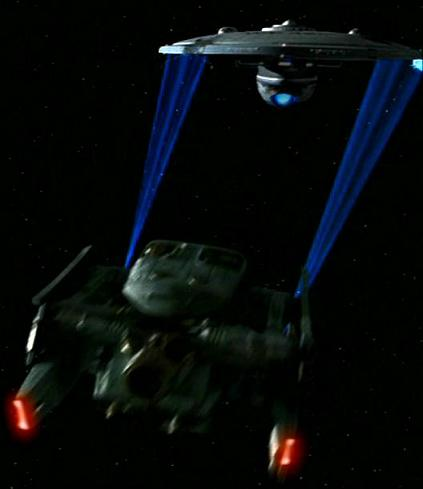
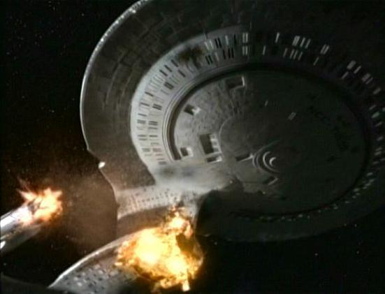

The Fredrickson, a slightly more advanced ship compared to the Enterprise, was created to defend Earth and neighboring Federation planets
within reach of Earth.

FSY 2371
At times the Fredrickson would encounter small groups of Klingon War Birds, testing the Enterprises defenses
to mark off weaknesses, most times the Klingons would leave with fewer numbers than before.
FSY 2372
The Fredrickson, now a battle hardened veteran, is sent to a newly discovered wormhole in the Bajoran section of the known galaxy, this would be the beginning
to the Bajoran wormhole conflict, that would quickly turn into the beginning of the Dominion War.
FSY 2373
At first only a few sightings of the Dominions were seen, mostly sub=species like the Vorta and the more vicious
Jem'Hadar, but soon a mysterious order is sent to attack the outpost, Deep Space 9, a Federal outpost.
FSY 2373
Despite the victory for the Federation at Deep Space 9, the Dominions leaders, the Founders, send horde after horde of
advanced ships to destroy anything in Federation Space.
FSY 2374
With the Federation stretched thin, an unlikely ally joins the Federation in its struggle, the Klingons.
FSY 2374
With the Fredrickson and the Kal'kah as flagships for the allied Federation and Klingon fleet, the tide of war switches in favour
of the new alliance.
FSY 2375
With the order to raze all cities within the Dominion sector to avoid calling surrender, the Fredrickson finds itself racing against time to set off
an improvised EMP bomb to stop the Dominion fleet from fullfilling it's heinous orders.
FSY 2376
With the Dominion fleet either destroyed or broken, surrender agreements are signed on the Fredrickson on behalf of the Dominion, in which the Federation escorts
it's defeated enemy back to the Bajoran wormhole to send them back to their part of the galaxy.